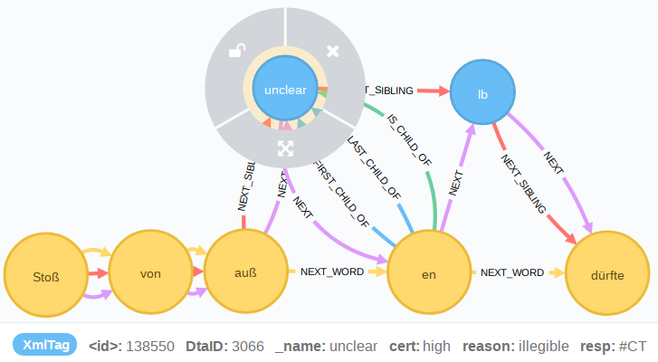

Modellierung von Zweifel und Unsicherheit nach den Richtlinien der TEI
XML im Graphen
Zweifelsattribute im DTA-Dokument
Zusammenfassung
Zweifel und Unsicherheit: TEI
Gegenstand des Vortrags
Auszeichnung von unsicheren Lesarten in Handschriften
Darlegung der zugehörigen TEI-Richtlinien
Wichtig für die Interoperabilität der Daten und die intersubjektive Nachvollziehbarkeit von Einzelentscheidungen scheinen uns certainty- und responsibility-Angaben an zweifelhaften Stellen
zu sein.
Insbesondere, wenn zusätzlich Angaben zum Grad der Sicherheit einer Auflösung möglich sind.
Graphtechnologien bieten hier Möglichkeiten zur Modellierung und Visualisierung von Unsicherheit und Verantwortung.
XML-Fragment aus Gotthilf Patzigs Mitschriften von Humboldts Vorträgen über physische Geographie, S. 13
[...] So wie die Geognoſie durch die Auf-
<lb /> findung u. nähere Beachtung der thieriſchen Ver-
<lb /> ſteinerungen aufgeklärt wurde: ſo hat
<lb /> der phyſiſche Theil der Aſtronomie durch
<lb /> die Entdeckungen im Gebiet der Optik gewoñ<supplied
reason="damage" resp="#BF">en;</supplied>
<lb /> u. die Cometen ſind beſonders näher
<lb /> beobachtet werden. Jn beſtändiger
<lb /> Bewegung kañ man dieſe eine perio-
<lb /> diſch oſcilirende neñen. Dieſe kañ
<lb /> gehem̃t, geſtöhrt werden auf viele Weiſe;
<lb /> deñ welch ein geringer Stoß von auß<unclear
reason="illegible" cert="high" resp="#CT">en</unclear>
<lb /> dürfte dazu gehören ſie in Bewegung
<lb /> zu ſetzen, da die Düñigkeit derſelben
<lb /> Alles überſteigt was wie ſelbſt von
<lb /> Gas-Arten auf der Erde keñen. Dieſe
<lb /> Düñigkeit iſt 5000 mal geringer als die
<lb /> Dichtigkeit der Erde. – Kom̃en wir jetzt
<lb /><note place="left"><hi rendition="#u">Telluriſche
Verhältniſſe</hi>
<lb /></note><hi rendition="#u">zu den telluriſchen
Verhältniſſe, <subst><del rendition="#erased"><gap
reason="illegible" /></del><add place="across">ſo
werd</add></subst>en
<lb /> wir die Form, Größe u. Dichtigkeit des
<lb /> Planeten betrachten –</hi>
cert- und resp-Attribut und als Propertys des unclear-Knotens
Zweifelsattribute im DTA-Dokument
// Zweifelsattribute im DTA-Dokument
MATCH (n:XmlTag)
WHERE n.resp IS NOT NULL
AND n.cert IS NOT NULL
RETURN n._name AS Element, n.resp, n.reason, n.cert, count(n.resp) AS Anzahl
ORDER BY Anzahl DESC
Interoperabilität ist bei TEI-Subsets wie DTA und WeGA dank großer Nähe zu den TEI-Richtlinien auf Kodierungsebene gegeben
Intersubjektive Nachvollziehbarkeit von cert-Attribut-Angaben für sich alleine genommen schwierig. Das resp-Attribut bietet die Chance, Entscheidungen eines einzelnen Bearbeiters intern zu vergleichen.
Im Graphen ist die Zusammenführung von Annotationen auf Editorenebene leichter
Damit wäre es denkbar für einen Editor einen "Fingerabdruck" zur Anwendung von Zweifelselementen zu erstellen
Vielen Dank für die Aufmerksamkeit
Literatur
Burghart, Marjorie/Rehbein, Malte (2012): The Present and Future of the TEI Community for Manuscript Encoding, in: Journal of the Text Encoding Initiative (Issue 2), http://journals.openedition.org/jtei/372,
Zugriff: 16.01.2018.
Carl-Maria-von-Weber-Gesamtausgabe. Digitale Edition, http://weber-gesamtausgabe.de/A070001 (Version 3.2.1 vom 8. Januar 2018) Letzte Änderung dieses Dokuments am 17. Dezember 2017. Zugriff:
16.01.2018.
Johann Wolfgang Goethe,. Tagebücher. Herausgegeben von Wolfgang Albrecht und Andreas Döhler. Band I,1. 1775–1787. (bisher unveröffentliche retrodigitalisierte Datenfassung)
Patzig, Gotthilf: Vorträge über physische Geographie des Freiherrn Alexander von Humbold: gehalten im großen Hörsaale des Universitäts-Gebäudes zu Berlin im Wintersemester 1827/28 vom 3ten Novbr. 1827. bis 26 April 1828. Aus schriftlichen Notizen nach jedem Vortrage zusammengestellt vom Rechnungsrath Gotthilf Friedrich Patzig. Berlin, 1827/28. [= Nachschrift der ‚Kosmos-Vorträge‛ Alexander von Humboldts in der Berliner Universität, 3.11.1827–26.4.1828]. In: Deutsches Textarchiv http://www.deutschestextarchiv.de/patzig_msgermfol841842_1828/13, S. 9., abgerufen am 16.01.2018.
Die beiden Abbildung Figure 18 und Figure 11 unterliegen dem Copyright: TEI Consortium 2012 (Creative Commons Attribution-NoDerivs 3.0 Unported License). Sie stammen
aus: Burghart, Marjorie/Rehbein, Malte (2012): The Present and Future of the TEI Community for Manuscript Encoding, in: Journal of the Text Encoding Initiative (Issue 2), http://journals.openedition.org/jtei/372, Zugriff: 16.01.2018. und wurden inklusive der Bildunterschrift unverändert übernommen.
Lizenz für Text und nicht anders deklarierte Abbildungen: CC-BY 4.0, Andreas Kuzcera, Dominik Kasper
 @andreaskuczera |
@eldoderino |
@digicademy |
@andreaskuczera |
@eldoderino |
@digicademy |
 digicademy |
CC-BY 4.0
digicademy |
CC-BY 4.0
{kind=link}

{kind=link}
{kind=link}
{kind=link}
{kind=link}
{kind=link}
{kind=link}
{kind=link}
{kind=link}
{kind=link}